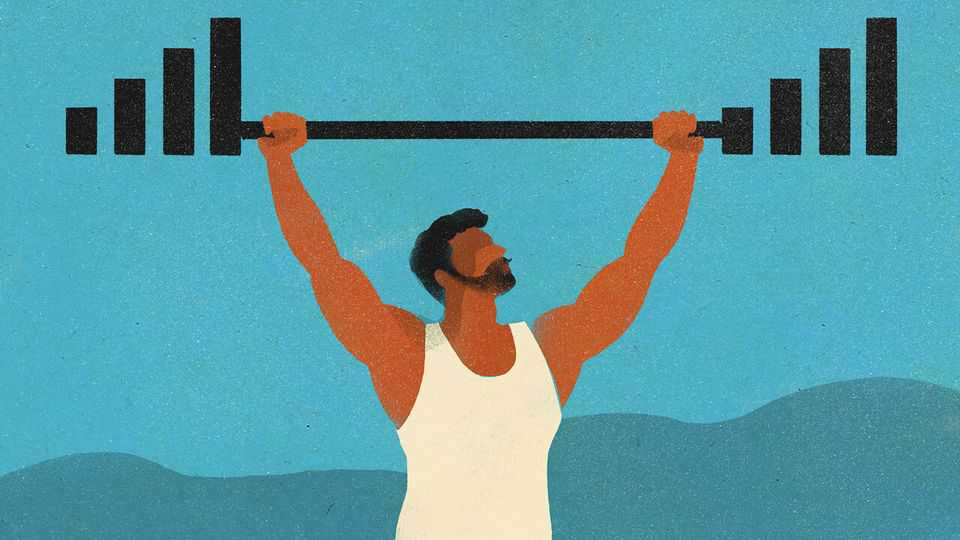

Cheap data is great for Indians but not for India’s reputation
The internet brings out the worst in everyone

Nov 5th 2026
“BITCH LASAGNA” is the name of a song by PewDiePie. It is also a two-word social history of the relationship between India and the internet. For five years Mr Pie, a Swede whose real name is irrelevant, was the owner-operator of YouTube’s most popular channel. In early 2019, after several months of back-and-forth, he was decisively overtaken by T-Series, a Bollywood studio.
In the run-up to his defeat the Swedish streamer posted what his fans described as a “diss”, or insult, track and what anyone else would consider to be bordering on bigotry. Its lyrics include references to open defecation, ridicule of Indian languages and a meme about “bobs or vegana” (don’t ask). The song’s title alludes to a Facebook Messenger screenshot of an Indian man requesting unclothed self-portraits from a woman and, on being ignored, hurling the presumably auto-corrected epithet at her. The internet really does bring out the worst in everyone.
Mr Pie’s battle with T-Series marked a hinge point in India’s internet adoption. In 2016 Mukesh Ambani, an industrialist who inherited a petrochemical company, took literally the maxim that “data is the new oil” and launched Jio, a mobile network with rock-bottom prices and generous data allowances. Almost overnight the share of India’s population covered by a modern mobile-broadband network jumped from 4% to 74%. A price war followed. Internet users doubled in just three years from a sixth of India’s people when Jio launched to a third when T-Series triumphed, rising to over two-thirds today. A billion Indians use the internet, or three for every American.
Not satisfied with bringing Indians online, Jio, which in October went public in one of the country’s largest listings, also gives them something to do once they get there. Its streaming service, Hotstar, has more than 450m monthly users, well ahead of Netflix or Amazon’s Prime Video. But neither Jio nor anyone else has managed to build a social space Indians prefer to Western ones. Indians are the largest nationality on YouTube, Instagram and Facebook and a significant minority on X, Reddit and Snapchat. Their influx onto these platforms has not been great for India’s image in the world.
“Bitch Lasagna”, though tasteless, reflects a common stereotype online of Indian men as forever propositioning women on social media. The idea of India as an unsanitary place, too, is depressingly common. And Indians have of late acquired a reputation as fierce nationalists with thin skins and foul mouths. As one viral post on X put it, “Never invade Russia in winter. Never attack India by Twitter.”
Some of the criticism is overblown. Crude men and noisy nationalists exist everywhere, but the sheer scale of the Indian contingent makes them more noticeable. Some of it is the result of India’s openness. Because Indians use the same platforms and often post in English, the country’s flaws are more visible than those of other countries.
And some of it may well be cynical. Social-media algorithms prioritise content that elicits strong reactions. YouTube travel videos that portray India as filthy and dysfunctional often attract millions of views. Instagram has lately been flooded with AI-generated videos showing street-food vendors cooking in appallingly unhygienic conditions. Ragebaiting Indians can be a sound commercial strategy, as the 300m-plus views of “Bitch Lasagna” demonstrated.
All of which obscures just how fun and indeed funny India’s internet can be. Influencers and YouTubers make material for all tastes. Social-media memes are the currency of youth slang and infiltrate the mainstream, too. This year’s “cockroach” youth protests started life as an online joke. It is only a matter of time before India’s popular culture starts breaking through more widely. Some of it already has. A dance move in a Telugu song called “Naatu Naatu” went viral in 2022 and later won an Oscar. Early this year an extended joke by Azeem Banatwalla, a stand-up comedian, resonated globally. As more culture crosses over, India’s image online will change too.
Until then, India’s reputation provides fodder for content. Mr Banatwalla’s gag was a list of all the traffic violations you can commit in Mumbai for the price of a speeding fine in Norway. Somnath Padhy, another comic, has a routine riffing on how “there are one billion websites in the world [and] I think Indians have commented on all of them.” And Reddit has a community dedicated to “the chaos unleashed by cheap internet”. It is called “Jio was a mistake”.■